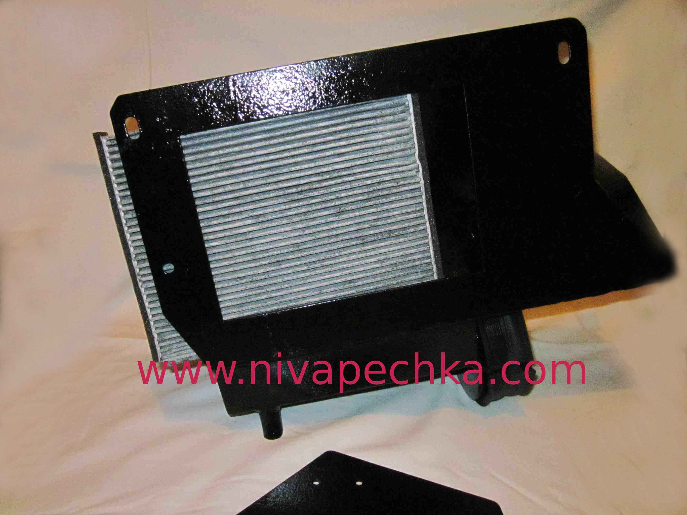

нива печка 2108 с салонным фильтром вид снизу корпуса.
Обновлено:
Нива печка 2108 с возможностью установки салонного фильтра. Показан корпус Niva-pechka с установленным салонным фильтром. Снизу видно как установлен салонный фильтр. Прорезь в основании корпуса Нива печка сделана максимально большого размера. Поэтому фильтр работает практически всей своей площадью. Прорезь большого размера так же способствует обдуву радиатора печки по всей доступной его площади. Что положительно сказывается на отборе тепла от радиатора отопителя Нивы и позволяет в конечном итоге быстрее прогреть салон автомобиля.

На фото показана модернизированная печка для Нивы 21213 2131 с салонным фильтром, вид корпуса снизу.нива-печка 2108 с салонным фильтром, вид снизу корпуса.